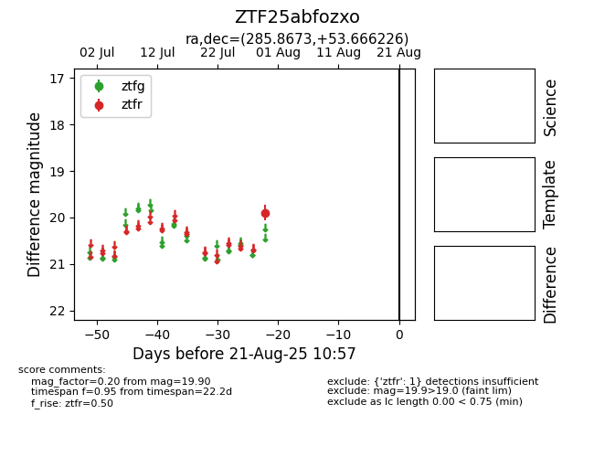

Target ZTF25abfozxo at 2025-08-21 10:57, see:
FINK: fink-portal.org/ZTF25abfozxo
Lasair: lasair-ztf.lsst.ac.uk/objects/ZTF25abfozxo
ALeRCE: alerce.online/object/ZTF25abfozxo
alt names
ZTF25abfozxo (ztf,alerce)
coordinates:
equatorial (ra, dec) = (285.8673,+53.66623)
galactic (l, b) = (83.9503,+19.85628)
photometry
last ztfr=19.90
1 ztfr detections
